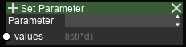
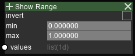

Modifier Nodes¶
Set Attribute¶
Description¶
Copies the per-atom values into the specified attribute slot. The slot can be used to color atoms or for future reading.
Options¶
Parameter (Dropdown)
Selects the attribute slot to modify. Non-assigned slots will keep their values.
Input sockets¶
| Name | Type | Shape | Description |
|---|---|---|---|
| values | list(*d) | PCNT[, FCNT] | see remarks |
Remarks¶
When executed with Run, data for all frames can be provided.
When executed with Run All, data must only be of 1 dimension.
Todo
Change the behavior to: If the data has frame data, only the values for the current frame is read.
Set Radii Scale¶

| Name | Type | Shape | Description |
|---|---|---|---|
| values | list(1d) | PCNT | radii scale (>0) |
Remarks¶
Radii scale is multiplied with the scale of the radius for the atom type. The default value is 1. Be careful when setting large values as it may cause a performance impact on the display.
Show Range¶
Description¶
For each atom, if the value for that index fall inside/outside the range, the atom is hidden.
Options¶
- Invert (toggle)
| State | Meaning |
|---|---|
| OFF | atoms with values outside the range is hidden |
| ON | atoms with values inside the range is hidden |
Input sockets¶
| Name | Type | Shape | Description |
|---|---|---|---|
| values | list(1d) | PCNT | value for inspection |
| min | int | - | minimum of range |
| max | int | - | maximum of range |